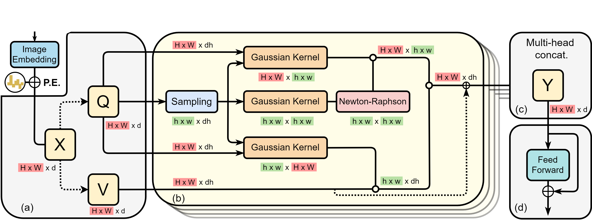
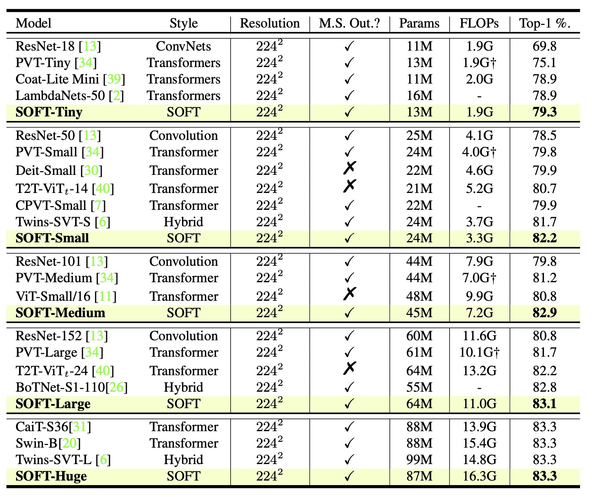

SOFT: Softmax-free Transformer with Linear Complexity
Jiachen Lu1
Jinghan Yao1
Junge Zhang1
Xiatian Zhu2
Hang Xu3
Weiguo Gao1
Chunjing Xu3
Tao Xiang2
Li Zhang1 *
1Fudan University 2University of Surrey 3Huawei Noah's Ark Lab
NeurIPS 2021 (Spotlight)
Paper Code
Abstract
Vision transformers (ViTs) have pushed the state-of-the-art for various visual recog-nition tasks by patch-wise image tokenization followed by self-attention. However,the employment of self-attention modules results in a quadratic complexity inboth computation and memory usage. Various attempts on approximating the self-attention computation with linear complexity have been made in Natural Language Processing. However, an in-depth analysis in this work shows that they are either theoretically flawed or empirically ineffective for visual recognition. We further identify that their limitations are rooted in keeping the softmax self-attention during approximations. Specifically, conventional self-attention is computed by normalizing the scaled dot-product between token feature vectors. Keeping this softmax operation challenges any subsequent linearization efforts. Based on this insight, for the first time, a softmax-free transformer or SOFT is proposed. To remove softmax in self-attention, Gaussian kernel function is used to replace the dot-product similarity without further normalization. This enables a full self-attention matrix to be approximated via a low-rank matrix decomposition. The robustnessof the approximation is achieved by calculating its Moore-Penrose inverse usinga Newton-Raphson method. Extensive experiments on ImageNet show that our SOFT significantly improves the computational efficiency of existing ViT variants. Crucially, with a linear complexity, much longer token sequences are permitted in SOFT, resulting in superior trade-off between accuracy and complexity.

